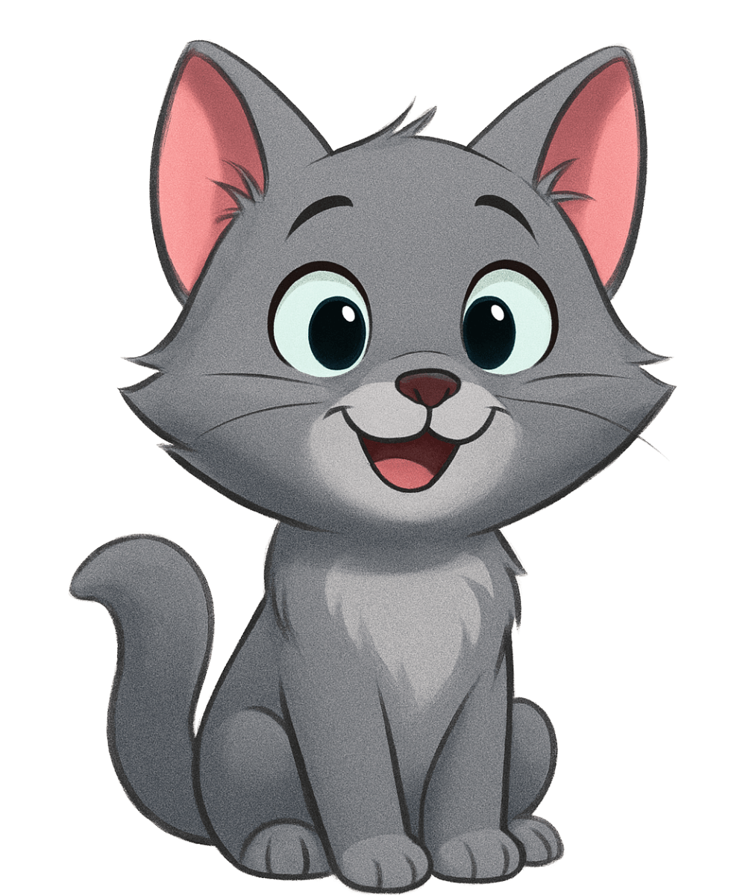

Internal test page for Step 2 (noindex). Press START, allow the microphone, make noise. Pause shows the settings panel (character, background, indicator, microphone, sensitivity) and the Resume pill; the fullscreen button sits top-left in every state (pill while fresh/paused, round while running; on iPhone Safari it toggles the "expanded" mode instead). The ⏱ Timer button top-right (left of Style) opens the quiet-time timer sheet (presets 1–30 min or a custom 1–90 min, Save; × or Escape closes it); Save shows a white pill under the top row with m:ss, a shrinking bar, ↻ restart and ✕ close (both only while the timer is not counting; the sheet also offers "Remove timer"). The timer counts only while the meter runs: before Start it waits (lighter pill), Pause freezes it (⏸), Resume continues; at 0:00 the pill turns red, the time pulses twice and a soft chime plays (signals timer-set, timer-start, timer-done, timer-cancel). On phones the paused sheet covers the stage: × closes it, the white bar at its bottom resumes. After a pause that ends a session of 2 minutes or more, a "Was it useful today?" line appears at the top of the panel (once per 30 days). Signals go to TelemetryDeck test mode and are listed in the log below (tool-start, tool-session, visit, pro-view, pro-click, setting-change, feedback, mic-error, mic-switch, fullscreen, unlock-click, unlock-success, unlock-cancel, unlock-fail, unlock-restore-attempt). Unlock UI (mock mode): open this page once with ?dev=1; without that flag the page shows today's interest card and no unlock UI. With the flag: the panel shows the Unlock button (straight to the mock checkout) and the Restore link; a locked thumb opens the short unlock dialog (centred modal; Escape or × closes it).
Test stand-in for the card below the fold on index.html. A locked thumbnail click counts a pro-click and opens the inline interest card in the panel (no scroll) — with the kq-dev flag it opens the unlock dialog instead; this button counts pro-click {item:"interest", from:"card"}.
Thanks — counted!